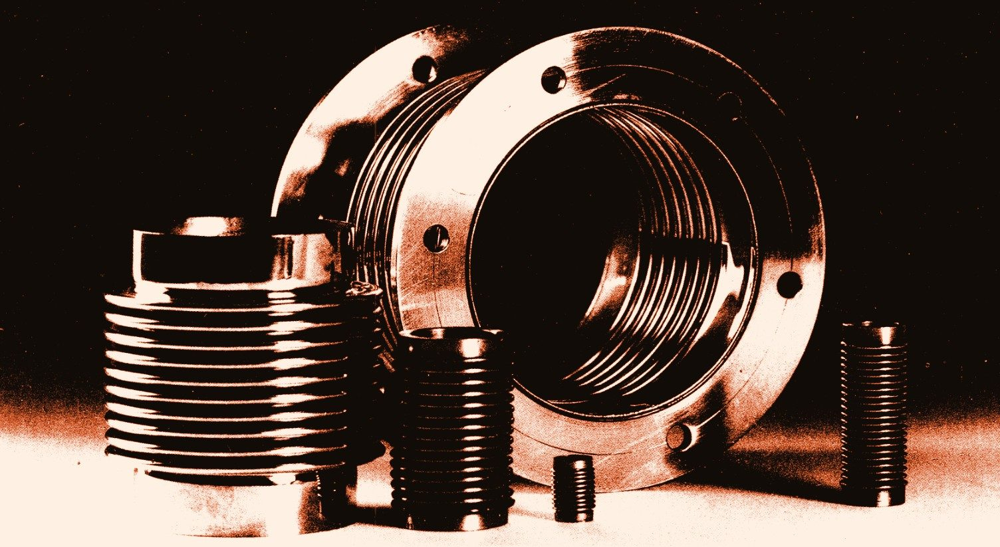

Your requirement first
Standard or fully custom — every joint is engineered around your line, your medium and your duty.
Stanflex product catalogue · Edition 2026
Built around your requirement — your sizes, your pressures, your temperatures.
Standard or fully custom — every joint is engineered around your line, your medium and your duty.
Every bellows is inspected and pressure-tested at our works before it reaches you.
From enquiry and joint selection to installation guidance — we stay with you at every step.
The companyStanflex
STANFLEX multi-ply bellows are the result of years of experience. Building the bellows wall from several thin plies gives the combined strength of many layers against internal pressure, while retaining the flexibility and movement capacity of each individual thin ply.
A standard range meets almost every expansion problem in practice — and beyond it, we design and manufacture bellows for special applications up to 5 m diameter, 100 kg/cm² and 1300 °C.
About the company →
ExploreStanflex
Shape, size, pressure and temperature are no bar to us.